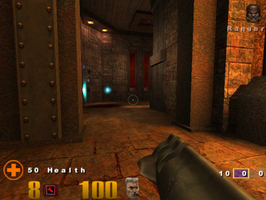
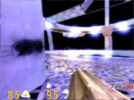

Quake3
Dieser Artikel wurde für die folgenden Ubuntu-Versionen getestet:
Ubuntu 16.04 Xenial Xerus
Zum Verständnis dieses Artikels sind folgende Seiten hilfreich:
Quake 3 ist im Gegensatz zu den anderen Teilen der Quake Serie auf Multiplayer ausgerichtet, enthält jedoch einen Einzelspielermodus. Das Spiel setzte seinerzeit durch die neue Grafikengine technische Maßstäbe und war eines der ersten großen eSport-Spiele. Am 20. August 2005 veröffentlichte id Software  die Quake 3 Engine unter der GNU GPL, wodurch neue Projekte auf Basis dieser Engine möglich wurden. Kein anderer Shooter hat es so überzeugend geschafft, ästhetisches Artwork mit zeitloser Musikgestaltung in einem Spiel mit exzellentem Gameplay zu vereinen, wie Quake 3 Arena.
die Quake 3 Engine unter der GNU GPL, wodurch neue Projekte auf Basis dieser Engine möglich wurden. Kein anderer Shooter hat es so überzeugend geschafft, ästhetisches Artwork mit zeitloser Musikgestaltung in einem Spiel mit exzellentem Gameplay zu vereinen, wie Quake 3 Arena.
|  |  |
| Quake 3 | OpenArena |
Man kann inzwischen drei Version von Quake 3 unterscheiden:
Das Open-Source-Projekt ioQuake kümmert sich um die Erweiterung und Pflege der quelloffenen Quake 3 Engine. Es benötigt jedoch die offiziellen, kostenpflichtigen Texturen und Modelle des Originals. Diese Version ist unter Einschränkungen online zu ids Pointrelease kompatibel.
Das Projekt OpenArena soll ein völlig freier Ersatz für ids Quake 3 werden, deshalb steht hier nicht nur der Quellcode, sondern auch der gesamte Inhalt des Spiels unter GPL. Diese Version ist online nicht zu den beiden anderen Titeln kompatibel.
Offizielle Quake 3 Version von id Software
Die normale, von id Software veröffentlichte Quake 3 Version, welche Closed-Source ist und über einen sog. Pointrelease bereitgestellt wird. Der Code ist aber hoffnungslos veraltet und sorgt für Probleme bei der Installation oder dem Sound. Daher ist ioquake3 vorzuziehen.
Des weiteren gibt es noch Quake 3 Mods, die das Original erweitern oder ein komplett neue Ideen umsetzen.
Abhängigkeiten¶
Alle Quake 3-Versionen benötigen für die Soundausgabe das Paket
libopenal0a (universe, [2])
Hinweis:
Mittlerweile sollte das Paket libopenal1 heißen, ist dies der Fall sollte man noch einen Symlink setzen (siehe weiter unten bei Problemlösungen)
ioQuake¶
Nachdem der Quellcode der Quake 3 Engine unter die GPL gestellt wurde, schlossen sich die Fans zu dem Projekt ioQuake zusammen um sie weiter zu verbessern. Zu den neuen Features gehören unter anderem
Unterstützung für OGG Vorbis und OpenAL
Verbesserte Autovervollständigung in der spielinternen Konsole
Unterstützung für mehr Plattformen usw.
Neben der offiziellen ioQuake-Version, mit der nur die kostenpflichtige Quake 3 Version spielbar ist, gibt es bereits eine Reihe von kostenlosen Open-Source-Spielen, die auf dieser Engine aufbauen. Dazu gehören neben OpenArena auch World of Padman, Urban Terror und Tremulous.
Hinweis:
IoQuake ist voll zu Quake 3 kompatibel und kann auf den selben Servern online gespielt werden, solange nicht PunkBuster verwendet wird.
Installation¶
Zur Installation lädt man zunächst die aktuelle Version hier herunter. Es handelt sich um einen Loki Installer [7]. Nach der Installation muss die Datei pak0.pk3 im Unterordner baseq3 sowie missionpack (für Teamarena) von der Quake 3 CD im ioQuake-Verzeichnis in den gleichnamigen Ordner kopiert werden. Wenn das Spiel als Root installiert oder eine Verknüpfung in dem Ordner ~bin erstellt wurde, kann es mit dem Befehl
ioquake3
gestartet werden [6], ansonsten über die Datei ioquake3 im Verzeichnis des Spiels.
Hinweis:
Will man den Singleplay Modus bzw. gegen Bots spielen kann es sein, dass die Bots nicht spawnen. Eine Lösung dafür befindet sich unter Problemlösungen.
Pointrelease von id Software¶
Die offizielle, veraltete, von id Software bereitgestellte Installationsprogramm für Linux.
Installation¶
Zur Installation lädt man zunächst das aktuelle Pointrelease hier herunter. Es handelt sich um einen Loki-Installer [7]. Nach der Installation muss die Datei pak0.pk3 im Unterordner baseq3 und missionpack (für Teamarena) von der Quake 3 CD im Quake3-Verzeichnis in den gleichnamigen Ordner kopiert werden. Wenn das Spiel als Root installiert oder eine Verknüpfung in dem Ordner ~bin erstellt wurde, kann es mit dem Befehl
quake3
gestartet werden [6], ansonsten über die Datei quake3 im Verzeichnis des Spiels.
Mods und andere Erweiterungen¶
Installation und Start¶
Beim Installieren von Mods muss man darauf achten, ob das Archiv des heruntergeladenen Mods einen neuen Ordner erstellt oder nicht. Wenn ja, entpackt man den Mod einfach ins Quake 3-Verzeichnis oder ins Homeverzeichnis nach .q3a (Pointrelease) bzw. .ioquake3 (ioQuake) [5]. Wenn nicht, erstellt man vorher im Quake 3-Verzeichnis oder in dem entsprechenden, versteckten Ordner im Heimatverzeichnis einen neuen und entpackt den Mod in diesen [5]. Anschließend kann der Mod entweder im Hauptmenü unter Mods ausgewählt werden oder mit dem Befehl
quake3 set fs_game Ordnername
direkt gestartet werden [6].
Mit Ordnername ist der Name des Ordners gemeint, in dem man den Mod jeweils entpackt hat. Der Befehl zum direkten Starten des Mods ist immer gleich und funktioniert auch so bei ioQuake. Um andere Erweiterungen wie neue Karten, Modelle etc. zu installieren, müssen sie einfach in den Unterordner baseq3 im Quake 3-Verzeichnis oder im entsprechenden Ordner im Homeverzeichnis entpackt werden [5].
Mod-Empfehlungen¶
CPMA
CPMA (Challenge Promode Arena)
sorgt dank veränderter Physik für einen schnelleren Spielablauf. Optimierte Netzwerkeinstellungen erhöhen die von professionellen Spielern gewünschte Präzision bei Spielerpositionen und Kollisionsabfragen. Es wird zudem auch besonderen Wert auf ausgeglichene Duelle gelegt, was diesen Mod besonders für den eSport interessant gemacht hat.
Rocket Arena 3
In Rocket Arena
treten zwei Teams gegeneinander an, von denen jeweils zwei Spieler im Duell gegeneinander antreten. Man startet in der Regel von Anfang an mit allen Waffen und es gibt keine zusätzlichen Gegenstände wie Waffen oder Rüstungen.
Monkey Kombat Arena
Monkey Kombat Arena
zeichnet sich durch knallig-bunte Comic-Grafik aus.
DeFRaG
Bei DeFRag
dreht sich alles um sog. Trickjumps, besonders komplizierte Sprünge, die nur mit viel Übung gelingen. Es gibt spezielle "Jump-" und "Runmaps" bei denen ein Hindernis-Parcours durch Sprungtechniken und unter Zuhilfenahme der verfügbaren Waffen auf Zeit absolviert werden muss.
Reaction Quake 3
Reaction Quake 3
ist die Fortführung von Action Quake 2.
OSP Tourney Q3A
OSP
ist vergleichbar mit CPMA hat aber doch sein eigenen Charm.
High Quality Quake v2.5
HQQ v2.5 for Quake III Peppt den Look als auch den Sound ausgewogen auf.
Tipps¶
Spielinterne Konsole öffnen¶
Bei deutschen Tastaturen öffnet man die spielinterne Konsole mit Alt Gr + zweimal + .
Um alternativ die standardmäßige Zirkumflextaste ^ zum Öffnen der Konsole zu nutzen, kann folgendes Startskript verwendet werden. Der Pfad (Zeile 2) ist entsprechend dem lokalen Installationspfad anzupassen. Auch die ausgeführte Spieldatei (Zeile 4) muss entsprechend dem verwendetem Client angepasst werden (z.B. ioquake3.x86_64 bei einer 64 Bit Version von ioQuake). Das Skript kann als quake3.sh gespeichert werden und muss anschließend ausführbar gemacht werden[10].
1 2 3 4 5 | #!/bin/sh cd /home/USER/quake3 xmodmap -e "keycode 49 = 0x60" ./quake3.x86 xmodmap -e "keycode 49 = 0x5e" |
Instagib¶
Man kann Instagib gegen Bots spielen, indem man im CPMA Mod den Konsolenbefehl:
/callvote instagib 1
ausführt.
Oder man verwendet z.B. die Konsolenbefehle:
/devmap q3dm1 /god /addbot keel 1 /give_all
Die Konfigurationsdatei¶
Alle Spieleeinstellungen werden in die Datei: ~/.q3a/baseoa/q3config.cfg geschrieben. Man kann sie mit einem Editor öffnen um folgende Änderungen vorzunehmen:
Dualcore¶
Um den Multiprozessorbetrieb zu aktivieren ändert man den Punkt seta r_smp "0" um in seta r_smp "1".
Frames per second¶
Um im Spiel die Frames per second (FPS) anzeigen zu lassen: seta cg_drawFPS "1".
Blut ausschalten¶
Um die Leistung zu verbessern kann das Blut abgestellt werden: seta com_blood "0".
Optimale Ingamephysik¶
Da die Physik der Engine von der Framezahl abhängig ist sollte man den optimalen Wert: seta com_maxfps "125" einstellen.
Field of View¶
Das Fov für Normalsicht und Zoom lässt sich mit z.B. diesen Parametern einstellen:
seta cg_fov "90" seta cg_zoomfov "23"
Ein größerer Wert sorgt für ein weiteres Sichtfeld.
Bots¶
Lassen sich durch den Befehl:
/addbot name 1-5(Stärke) z.B. /addbot slash 4 in die Map spawnen.
Der Befehl /bot_nochat 1 hindert die Bots am chatten.
Problemlösungen¶
Bots werden unter ioquake3 nicht geladen¶
In manchen Versionen tritt das Problem auf, dass die Bots nicht erscheinen bzw. nicht geladen werden können. Im ersten Tutorial-Level (q3dmo) des Singlepayer Modus erscheint z.B. folgende Fehlermeldung auf der Konsole:
^1Error: file bots/default_c.c, line 2: file charsh" not found ^3Warning: couldn't find skill 1 in bots/default_c.c ^1Error: file bots/default_c.c, line 2: file charsh" not found ^1Error: file bots/default_c.c, line 2: file charsh" not found ^1Error: file bots/default_c.c, line 2: file charsh" not found ^3Warning: couldn't load any skill from bots/default_c.c ^1Error: file bots/crash_c.c, line 10: file charsh" not found ^3Warning: couldn't find skill 1 in bots/crash_c.c ^1Error: file bots/default_c.c, line 2: file charsh" not found ^1Error: file bots/crash_c.c, line 10: file charsh" not found ^1Error: file bots/default_c.c, line 2: file charsh" not found ^3Warning: couldn't load any skill from bots/crash_c.c ^1Fatal: couldn't load skill 3.000000 from bots/crash_c.c
Die Ursache des Fehlers liegt in einem zwischenzeitlichem Schreibfehler im ioquake3 Sourcecode, so dass nach einem falschen Dateinamen gesucht wird. Als einfache Umgehung des Problems kann die betroffene Spieldatei umbenannt werden, so dass diese wieder gefunden wird. Hier zu die Datei ioquake3/baseq3/pak0.pk3 mit der Archivverwaltung öffnen und in das Verzeichnis botfiles wechseln. Hier muss die Datei chars.h in charsh" (inklusive Anführungszeichen!) umbenannt werden. Dies ist direkt innerhalb des geöffneten Archivs möglich. Nach einem kurzem Moment wird das Archiv automatisch aktualisiert und kann wieder geschlossen werden.
Bots im CPMA Mod sorgen für heftiges Ruckeln¶
Ab Version 1.40 besteht dieses Problem insbesondere bei Instagib (Konsolenbefehl /callvote instagib 1) mit Bots. Abhilfe schafft z.B. ein verwenden der Version 1.39 CPMA-1.39.
Auflösung wird nicht maximiert¶
Sollte die im Spiel eingestellte Auflösung nicht maximiert werden, sondern nur in einem kleinen Fenster angezeigt werden, hilft die Nutzung von xrandr. Das gleichnamige Paket muss installiert [1] werden und das Spiel mit folgendem Befehl im Terminal [4] gestartet werden:
xrandr -s 800x600; quake3; xrandr -s 0
Je nach dem welche Auflösung im Spiel gewählt ist es entsprechend abzuändern. Es dient dazu vor dem Spielstart Auflösung anzupassen aber nachdem das Spiel beendet wurde, wieder auf den vorherigen Standard zu stellen.
Benutzerdefinierte Auflösung¶
Soll eine benutzerdefinierte Auflösung von z.B. 1400x1050 verwendet werden, öffnet man mit einem Editor [4] die Datei ~/.q3a/baseq3/q3config.cfg und ändert den Punkt seta r_mode "0" in seta r_mode "-1" um. Die gewünschte Auflösung trägt man anschließend in r_customwidth und r_customheight ein.
Bei Quake 3 funktioniert der Sound nicht¶
Wenn Quake 3 entweder gar keinen Sound oder keinen im Parallelbetrieb mit OSS-Anwendungen wie Teamspeak wiedergibt, dann helfen evlt folgende Befehle:
echo "quake3.x86 0 0 disable" > /proc/asound/card0/pcm0c/oss echo "quake3.x86 0 0 direct" > /proc/asound/card0/pcm0p/oss echo "quake3.x86 0 0 disable" > /proc/asound/card0/pcm1c/oss
libopenal Fehler trotz installierter Libary¶
Sollte es trotz installiertem libopenal-Paket zu folgendem Fehler kommen "./ioquake3.i386: error while loading shared libraries: libopenal.so.0: cannot open shared object file: No such file or directory" schafft folgender Befehl Abhilfe:
sudo ln -sf /usr/lib/libopenal.so.1 /usr/lib/libopenal.so.0

- Erstellt mit Inyoka
-
 2004 – 2017 ubuntuusers.de • Einige Rechte vorbehalten
2004 – 2017 ubuntuusers.de • Einige Rechte vorbehalten
Lizenz • Kontakt • Datenschutz • Impressum • Serverstatus -
Serverhousing gespendet von